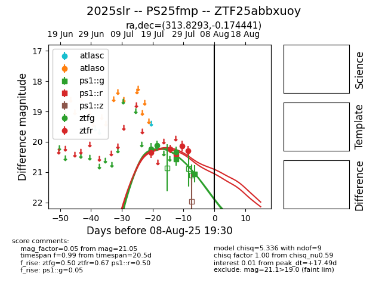

Target 2025slr at 2025-08-08 19:51, see:
FINK: fink-portal.org/2025slr
Lasair: lasair-ztf.lsst.ac.uk/objects/2025slr
ALeRCE: alerce.online/object/2025slr
TNS: wis-tns.org/object/2025slr
YSE: ziggy.ucolick.org/yse/transient_detail/2025slr
alt names
ZTF25abbxuoy (ztf,fink)
2025slr (tns,yse)
PS25fmp (panstarrs)
coordinates:
equatorial (ra, dec) = (313.8293,-0.17444)
galactic (l, b) = (48.0680,-27.34594)
photometry
last ps1::g=21.05, ps1::r=20.39, ztfg=20.34, ztfr=20.30
2 ps1::g, 1 ps1::r, 3 ztfg, 4 ztfr detections
